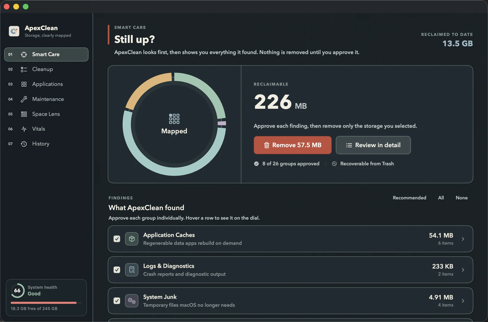
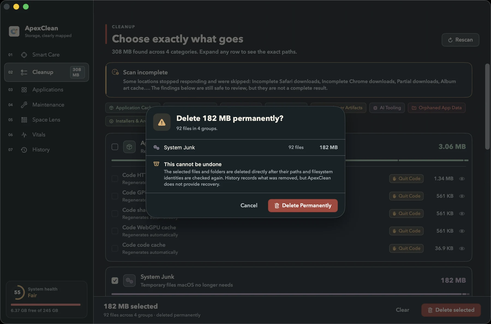

Map
A read-only pass measures allocated size and groups findings by what they are.
NOTHING CHANGESNative macOS careNo telemetry
ApexClean turns storage into an inspectable map. Scan read-only, review every path, then remove only what you approve.
macOS 14+ · Apple Silicon and Intel · GPL-3.0

The workflow
Every consequential action has a visible step before it.
A read-only pass measures allocated size and groups findings by what they are.
NOTHING CHANGESExpand categories to exact paths, sizes, risk and the apps keeping them in use.
EVERY PATH VISIBLEApprove the scope explicitly. Removals go to the Trash wherever macOS allows.
RECOVERABLE BY DEFAULTOne native toolkit
Smart Care makes the whole pass legible: what was found, what it means and what you selected.
SMART CARELOCAL / NATIVE / REVIEWABLE
Fails closed
PathGuard is the single gate in front of every removal. It needs an affirmative, current reason to allow a path. Ambiguity means no.
Inspect the safety engineMeasure and group; write nothing.
Paths, bytes, evidence and recovery.
Validate again at the syscall boundary.
Keep the undo path wherever possible.

Local by construction
ApexClean has no account system, analytics SDK, crash reporter or network client. Scans live in memory; the operation log stays on your Mac.
Built like a Mac app
SwiftUI above a separate ApexCore engine built entirely on Apple system frameworks.
The interface, safety boundaries, cleanup catalog and build pipeline are all public.
Static ambient surfaces and visibility-aware sampling keep a care utility from becoming load.
Free software for macOS
Universal build · macOS 14+ · no account · no telemetry